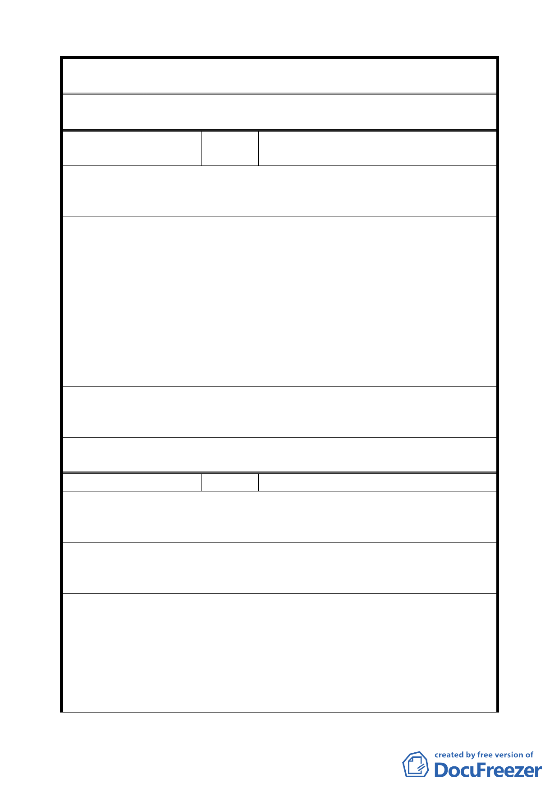

案 名 臺北市文山區都市計畫通盤檢討（細部計畫）案
委員會議
決議
依專案小組審查結論，畸零地由臺北市建築管理處依法處理。
編
號３
陳情人
景行社區都市更新促進會及 25 位陳情人
（09430080900）
陳情理由
（景美）
木柵動物園、指南宮、貓空電纜車、仙跡岩、景美商圈與藍
色公路及自行車河邊步道（含政大、世新大學）應串連成國
際觀光文教區，擬定百年大計，永續經營。
一、 靠近景美橋之景興路、木柵路一段道路過窄，應予拓寬。
二、 景美街保存區之西北側應開闢一條由市場用地直達景
文街之巷道。
三、 缺乏遊覽車大型停車場，以致景美夜市日趨沒落，集應
建議辦法
廟門可羅雀。
四、 新店北二高交流道中興路至景美溪不可中斷，應有橋樑
或高架至通景美商圈之停車場。
五、 位於景美夜市旁及羅斯福路東側比照「細景 3」之商二
（特）變更為商四區，以應永續經營。
六、 道路拓寬等用地問題請獎勵回饋辦法及權利變換解決。
專 案 小 組 一、 本地區同意市府評估意見，維持原第二種商業區（特）。
審 查 結 論 二、 其他大型停車場、道路動線等交通改善建議，移請交通
（94.7.4）
局處理。
委員會議
決議
依專案小組審查結論辦理。
編 號 ４ 陳情人 李親民（09430082800）
陳情理由
（ 細 景 4 ） （空白）
（細景 5）
細景 4、細景 5 請依原計畫，以免附近住宅區只有唯一交通
建 議 辦 法 道路。
請排除萬難達成，以維住宅區之交通及安全。
一、 廢除細景 4 部分私有道路用地（景美段一小段 415-1、
專案小組
會勘結論
（94.7.4）
（94.7.25）
416-1 地號）。
二、 其餘道路用地範圍已作為既成道路，且瑠公農田水利會
土地因地下溝渠無法建築、開挖（現況亦作為既成道路
使用），故維持原道路用地。
三、 其中之國有土地部分移請工務局儘速完成撥用程序。
四、 細景 5 北側道路已變更為學校用地，且該路段經市府工
二九